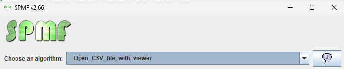
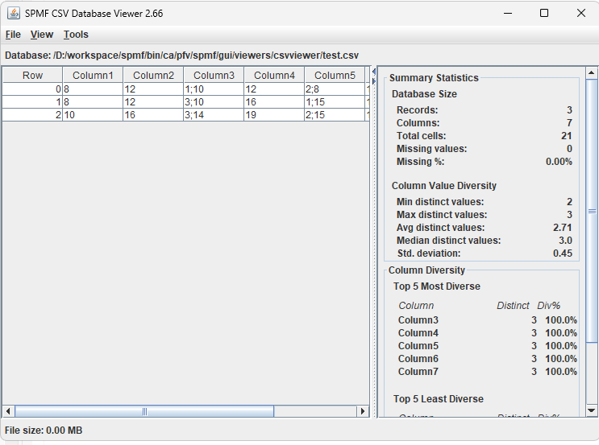

View the content of a CSV file using the CSV Viewer (SPMF documentation)
SPMF provides a CSV Viewer Tool to view the content of a CSV (Comma-Separated Values) file from the graphical user interface of SPMF. CSV files are one of the most common data exchange formats and are accepted as input by many algorithms in SPMF.
This webpage explains how to use this tool with an example.
How to run this example?
If you want to run this example from the graphical interface of SPMF, (1) choose the "Open_CSV_file_with_viewer" algorithm, (2) choose the testOpen.csv file as input, and then (3) click "run algorithm".

- If you want to run this example from the source code of SPMF, run the file MainTestCSVViewer, which is located in the package ca.pfv.spmf.gui.viewers.csvviewer.
-
If you want to execute this example from the command line
interface of SPMF, then execute this command:
java -jar spmf.jar run Open_CSV_file_with_viewer testOpen.csv
in a folder containing spmf.jar and the file testOpen.csv, which is included with SPMF.
What is a CSV file?
A CSV (Comma-Separated Values) file is a plain-text file in which each
line represents a record and fields within each record are separated by a
delimiter character, most commonly a comma (,). CSV files
may optionally include a header row as the first line, giving names to
each column.
Example of a CSV file:
8,12,1;10,12,2;8,11,3; 8,12,3;10,16,1;15,18,2; 10,16,3;14,19,2;15,19,1;14,16,2;
CSV is widely used for storing tabular data and is the input format for several data mining algorithms in SPMF.
What will be displayed?
After running the example, the CSV Viewer window will open and display the content of the file as a table, as shown below:

The viewer displays each row of the CSV file as a row in a sortable table. Clicking a column header sorts the table by that column. This provides a more convenient way to inspect a CSV file than opening it in a plain text editor.